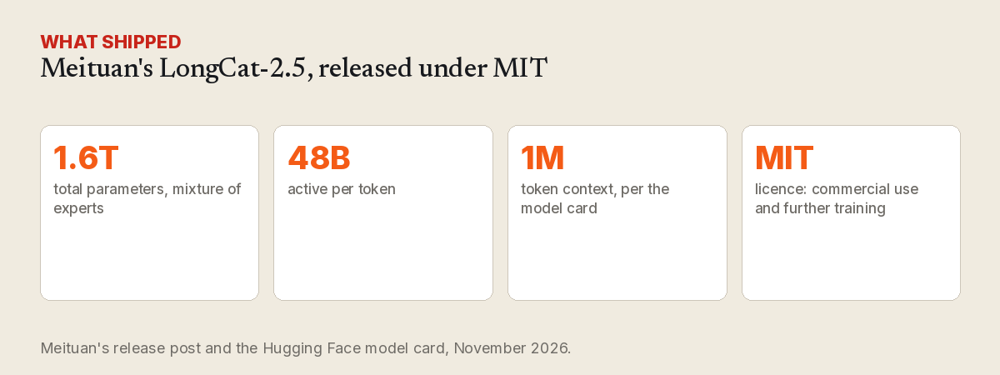
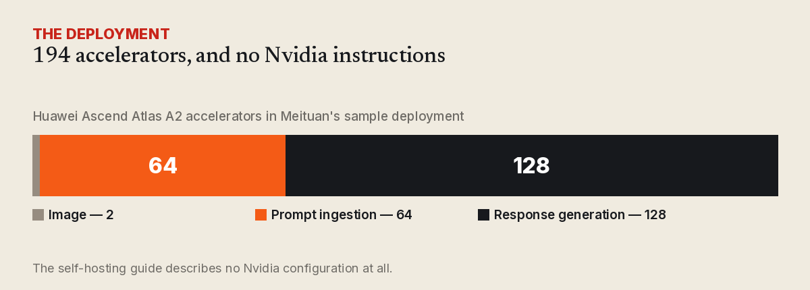
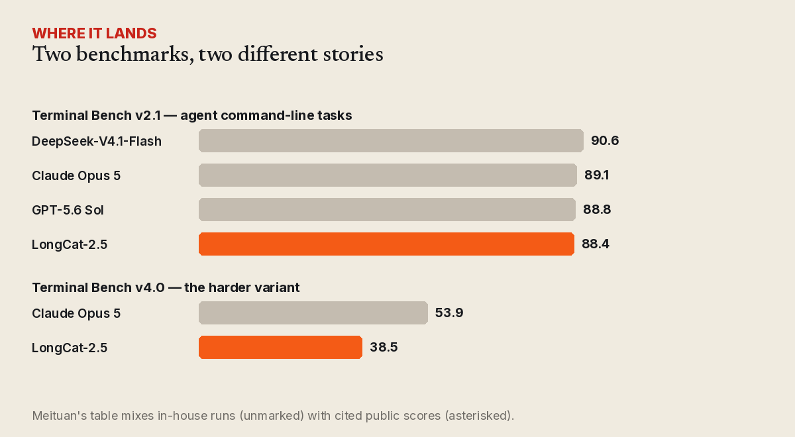

Open weights, closed hardware
Meituan released a 1.6-trillion-parameter agent model under MIT, trained on Chinese accelerators, with no instructions for the GPUs everyone else owns. That is the news.

On 15 November Meituan released the weights for LongCat-2.5, a mixture-of-experts model with 1.6 trillion parameters, about 48 billion of them active per token, under the MIT licence. It handles text, images and video, takes a context of up to a million tokens, and scores 88.4 on Terminal Bench v2.1 — within a point of Claude Opus 5 at 89.1.
That is a genuinely significant release. It is also the second-most interesting thing about it. The most interesting thing is a line in the self-hosting guide: the sample deployment runs on 194 Huawei Ascend accelerators, and there is no configuration for Nvidia GPUs at all.
What shipped, precisely
The licence is real. The MIT text sits in the repository, Meituan's release post says commercial inference and further training need no additional grant, and the checkpoints are on Hugging Face. For anyone who has watched "open" mean "open after a waitlist", this is the other thing.

The training claim is the striking one: Meituan says the predecessor, LongCat-2.0, was trained in late June on a cluster of more than 50,000 domestic AI chips, and that LongCat-2.5's experts are quantised to 4-bit so Chinese silicon can run the arithmetic natively. Against an 8-bit baseline Meituan reports 43.3% higher prompt throughput and 42.77% higher response throughput, with accuracy comparable on the benchmarks it evaluated.
The licence is not the portability
Open weights are usually described as a portability guarantee: download them, run them wherever you like. That was true when the hardware was one vendor's. It stops being true when the optimised path is built for a different instruction set.
LongCat-2.5 is 1.6 trillion parameters. Even with 48 billion active per token, that is a cluster, not a workstation. The documented deployment is 194 accelerators — two for image processing, 64 for prompt ingestion, 128 for response generation — and the model card points at NPU platforms. A team with eight H100s cannot follow that guide. They can wait for someone to port it, which is exactly what open weights invite and exactly what nobody has promised.

So the sentence "a frontier-class model was released for free" needs a second clause: to hardware you probably do not have. That is not a criticism of Meituan. It is what a maturing parallel stack looks like.
Two benchmarks, two stories
The benchmark table is worth reading closely, because it contains both the claim and its limit.
On Terminal Bench v2.1 — command-line agent tasks — LongCat-2.5 lands at 88.4, behind DeepSeek-V4.1-Flash at 90.6, Claude Opus 5 at 89.1 and GPT-5.6 Sol at 88.8. That is parity, more or less, from a lab nobody had on a frontier list a year ago.
On Terminal Bench v4.0, the harder variant, it scores 38.5 against Opus 5's 53.9. Same model, same table, a fifteen-point gap. Both are informative: the first says the gap in everyday agent work has closed, the second says the gap in hard agent work has not.

What export controls actually did
The lazy reading of this release is that the controls failed. The more accurate reading is that they worked as an industrial policy and failed as a brake.
Two years of restrictions on advanced Nvidia silicon did not stop Chinese labs from training large models. They pushed those labs to build a stack where the chip, the quantisation format and the serving software are designed together. A 4-bit format that Chinese accelerators process natively is not a workaround; it is a co-design decision you make when you cannot assume the other vendor's hardware.
What the controls did accomplish is a bifurcation. There are now two deployment targets, and a model can be excellent on one and unavailable on the other. That is a different world from 2023, when "open weights" meant a single, portable artefact.
What it means if you are building somewhere else
For a team in India, this lands on a live argument. The IndiaAI Mission has empanelled around 38,000 GPUs, and last week a central note ahead of the Chief Secretaries conference made an unusually blunt point: what is missing "is not compute but content" — state data is fragmented, scheme-specific, inconsistently coded, and there is no real channel into AIKosh because licences and provenance are undocumented.
Read those two facts together. The binding constraint on a country's AI capability is not the model weights, which are increasingly free, and not only the chips, which can be bought or subsidised. It is the data and the evaluation set that make a model useful in the languages and workflows people actually have — and the hardware path that lets it run where they are.
Which is also why a model that runs on a phone matters more, in the places that need it most, than a model that beats Opus by 1.5 points on a cluster of 194 accelerators. Both are progress. Only one of them is available to a district office with a mid-range laptop.
Three caveats worth carrying. The Hugging Face safetensors metadata lists about 1.78 trillion parameters, against the 1.6 trillion in Meituan's description, and neither document explains the gap. The benchmark table mixes in-house runs with scores cited from public reports, marked with an asterisk. And the "194 Huawei chips, never touched Nvidia" framing is The Decoder's reporting on the deployment guide — Meituan's own post and model card do not name a chip vendor.
What to watch
Three things will settle this: whether the community produces an Nvidia port and how much performance it loses in the translation; a third-party rerun of Terminal Bench rather than a table assembled by the model's author; and whether the next Chinese release ships a serving guide for both stacks. If it does, the bifurcation is temporary. If it does not, "open weights" has quietly acquired a hardware requirement, and the licence will not be the thing that determines who gets to use it.
The weights are free. The machine they were tuned for is not, and it is not the one in your rack.
Sources
- Meituan LongCat, release post (10 November 2026) and the Hugging Face model card.
- The Decoder, Meituan releases a 1.6-trillion-parameter agent model that never touched an Nvidia GPU, 15 November 2026.
- Ultrathink, on the weight metadata and benchmark provenance, 15 November 2026.
- TokenPost and HIMIAO Horizon, coverage of the weight release, 15 November 2026.
- Economic Times, Centre flags governance gaps in AI, geospatial and microbiome tech, 15 November 2026.